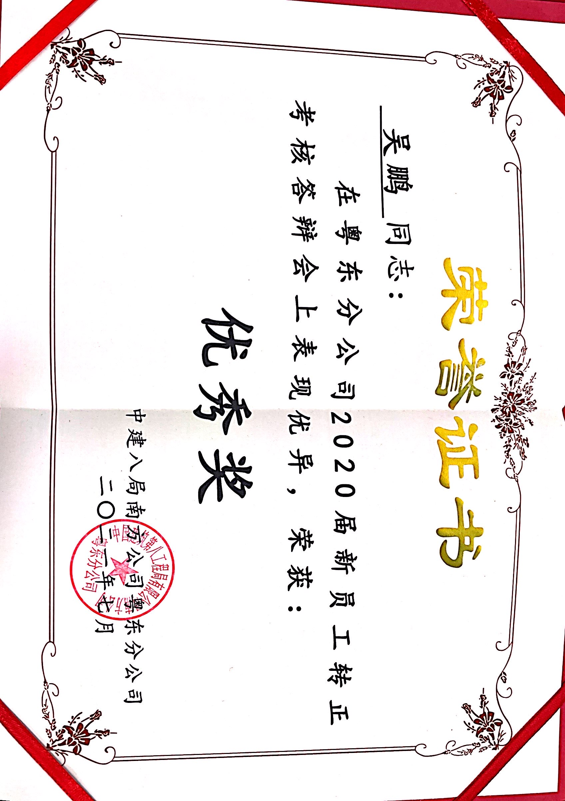
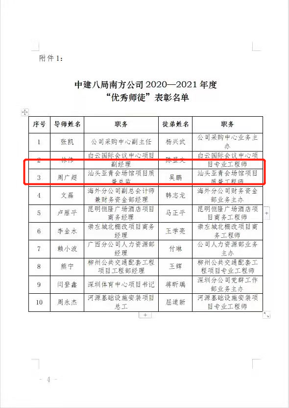
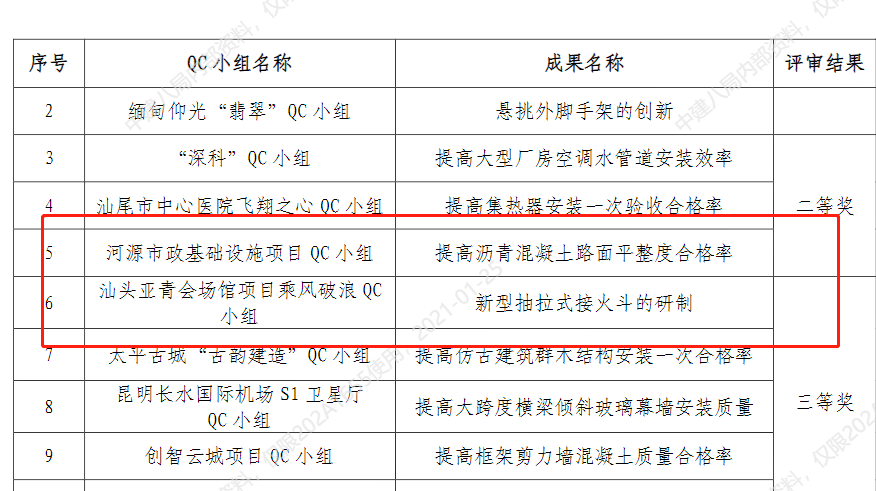
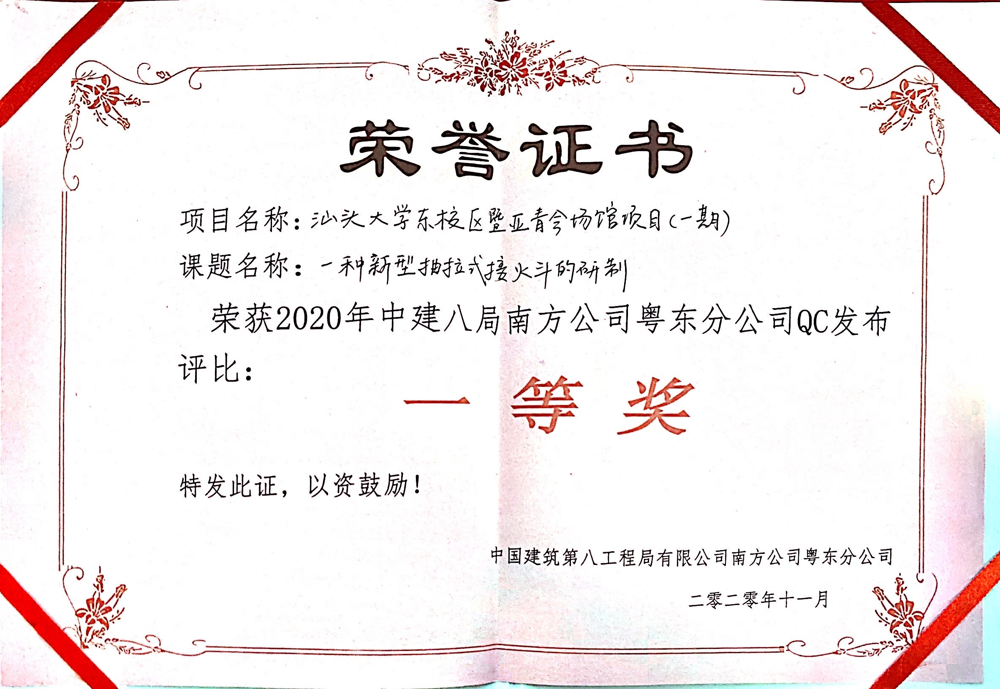
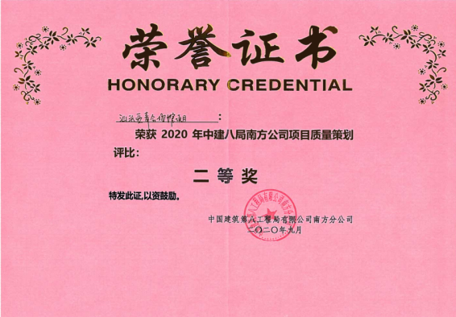
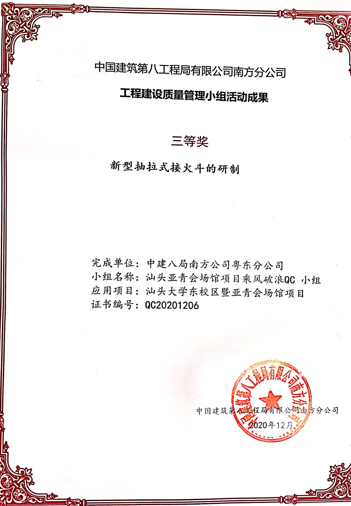

硕士
兰州大学 · 工商管理硕士（MBA）
兰州大学管理学院已通过 AMBA 与 BGA 国际认证，并加入联合国责任管理教育原则（PRME）倡议。 学院国际认证页面
山西职业技术学院专业课教师，兼具施工总承包单位与建设单位项目管理经验。本科接受系统土木工程训练， 硕士阶段在兰州大学学习工商管理，聚焦人力资源管理与工程安全培训。曾在中国建筑第八工程局有限公司南方公司 工作三年，现承担学校新校区建设项目甲方代表工作，并讲授建筑施工工艺、施工技术、工程测量、创新创业等课程。
关注施工管理、BIM 数字化应用、工程项目团队学习、安全培训体系、职业教育以及现场工程问题的数据化研究， 希望将一线工程实践转化为可验证、可推广的研究成果。
兰州大学管理学院已通过 AMBA 与 BGA 国际认证，并加入联合国责任管理教育原则（PRME）倡议。 学院国际认证页面
完成深圳地铁梧桐山站至沙头角站区间 CK43+800—CK44+200 段隧道设计与施工技术研究。
承担建筑施工工艺、施工技术、工程测量、创新创业等课程教学，将施工现场案例、BIM 应用和项目管理问题融入课堂。
参与设计、施工、监理与使用单位之间的协同，覆盖质量、安全、进度、技术变更、验收和移交等项目全生命周期工作。
积累施工组织、质量控制、安全管理、进度执行、BIM 协同和多专业沟通经验，2021 年获评南方公司优秀员工。
负责学生工程测量技能训练、竞赛组织与实践指导。
聚焦高压工程项目团队的工学冲突、胜任力发展与混合式培训体系重构。
利用现场静载响应复核 PHC 管桩沉降，并开展本构模型参数校准。
刊载于《好日子》2019 年第 21 期（下旬），CN 42-1880/G0，ISSN 1671-2609。
隧道工程设计与施工技术研究。
点击图片可查看原始尺寸。





